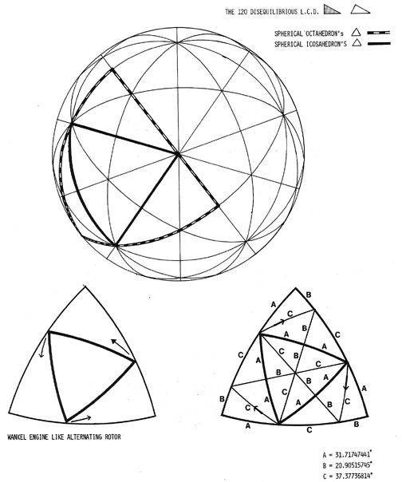
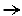

|  | |||||||||
Fig. 901.03 The Basic Disequilibrium 120 LCD Triangle:
The 360 convergent angles must share the 720° reduction from absolute sphere to chorded sphere: 720/360 = 2° per each corner; 6° per each triangle. All of the spherical excess 6° has been massaged by the irreducibility of the 90° and 60° corners into the littlest corner. .: 3036. In reducing 120 spherical triangles described by the 15 great circles to planar faceted polyhedra, the spherical excess 6° would be shared proportionately by the 90°-60°-30° flat relationship = 3:2:1. The above tells us that freezing 60-degree center of the icosa triangle and sharing the 6-degree spherical excess find A Quanta Module angles exactly congruent with the icosa's 120 interior angles. |